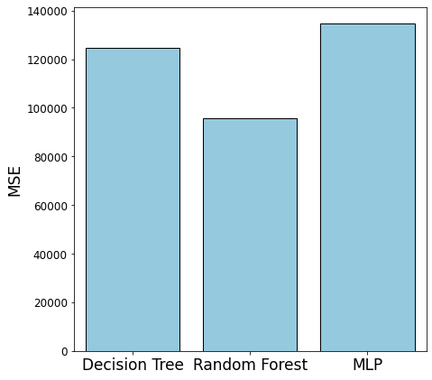
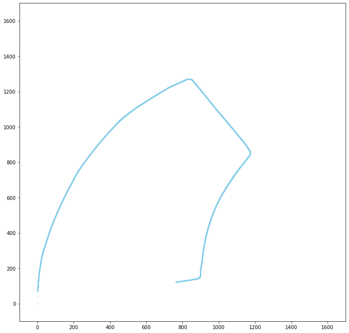

Trained to be a future Data Scientist. I have a broad set of technical skills.
Programming: Python, SQL, HTML / CSS / Javascript, Java, R. Data Analysis and Visualization: Pandas, Geopandas, Numpy, ArcGIS, Seaborn, Matplotlib, Bokeh, Highcharts(JS), Excel, JMP. Cloud Computing: AWS, Dask, PySpark. Machine Learning: Scikit-learn, PyTorch, TensorFlow(Keras). Autonomous Driving: Robot Operating System (ROS), Linux, Simultaneous Localization and Mapping (SLAM).
My Projects
▶ Image Classification, Segmentation, and Generation
Wildlife Classification with Deep Learning
The effectiveness of wildlife preservation relies heavily on in-depth understandings of the diversity and behavior of animals,
which requires intensive manual labor of experts to correctly label the images. In this project, we constructed a robust deep learning
model to automate this process through transfer learning with various architectures,
and improved network structures to better fit our tasks.
We experimented with a number of state-of-the-art deep learning networks,
benchmarked their performance, improved the best performing network, and visualized its decision making process with Class Activation Map. Trained on a heavily augmented dataset of animals,
our improved Wide-Resnet50 model achieved an impressive test accuracy of 96.2%, which introduced over 5% improvement over the
vanilla Wide-ResNet model, with a little extra computational cost.
[Access the report]
Training Error Curves (left) and Validation Accuracy Curves (right).
Class Activation Maps.
Image Segmentation: Recycle Bin Detection
In this project I implemented and trained a Gaussian Naive Bayes model from pixel data to distinguish among red, green,
and blue pixels. Then I utilized the same probabilistic color model to recognize recycling-bin blue color and segment unseen
images into blue regions. Given the blue regions, the algorithm is able to automatically detect blue recycling bins and draw a
bounding box around each detected instance. The model was trained on a small training set of 60 images, and it achieved 50% recall
and 100% specificity on the 10 images validation set.
[Access the report]
Detection Results (left) and Segmented Images (right).
Semi-Realistic Character Avatar Generation with Transfer Learning on StyleGAN
GANs are widely used for generating human photos, while the demand for fast generation of semi-realistic character
portraits is strong in many industries, there is rarely any research existing for this topic. In this project I
generated semi-realistic portraits for fantasy characters using StyleGAN on different datasets consists of a
combination of real human photos and fictional portraits.
[Access the report]
Images Generated by StyleGAN 2 Transfer Learned on Different Characters Images.
▶ Data Analysis and Interactive Visualization
New York City Airbnb: Find Your Dream House
The housing rental market in New York City is gradually recovering after a rough time during the pandemic.
The economy in NYC also revives with the reopening of restaurants, the growth of tourism, and the rapid rising of housing
rentals. It is crucial for travelers, long-term tenants, and landlords to understand the housing rental trend in NYC and locate
their desired offers, either to stay for a few nights or to optimize the pricing strategy for their own properties.
In this project, we developed a Flask-based website for analyzing and visualizing Airbnb rental trends in NYC, featuring user-friendly interactive
visualizations built with Bokeh, and full documentation for transparency and extensibility.
[Project Repository]
Website Demo (The AWS Server Hosting the Website is No Longer Available).
Indoor Airborne Infection Risk Estimator
Supervised by Professor Rajesh Gupta, we developed an indoor airborne COVID - 19 infection risk estimation website
which features convenient interactive visualization for fast comparison, with great transparency and extensibility,
while maintaining the ease of use. The website has a Python Dash backend, and the visualization was created using JS and Highchart.
[Visit the Website]
STEM Labor Market Analysis (EDA) and Visualization
In this project I explore a STEM jobs dataset collected from 2017 to 2021. I analyze the distribution of STEM job opportunities
and income, and how they relate to different levels of education, years of experience, and locations. I also preprocess data and
select features based on the data analysis. In the end I use several machine learning models to predict the income given features
selected and analyzed during the data analysis process, and compare their performance.
[Access the Report]
Distribution of Education Level (left) and Years of Experience vs. Average Income (right)
Log Distribution of Annual Income (left) and Log Annual Income by States (right)

MSE (left) and MAE (right) of Different Untuned Models
Sleep Health Analysis on Smart Mobile Devices
Sleep is crucial to our well being. Numerous studies have shown that one's sleep pattern is closely correlated with their
physical and mental behaviors during the day, yet most of them relied on clinical data which might not be representative
for everyday activities. In this project we investigate the associations between daily physical activities, psychological and
emotional states and sleep pattern (sleep duration, sleep quality, etc) using a dataset collected with wearable devices in
non-clinical everyday settings. The resulting correlations we found provided us insights into what might contribute to a
healthy sleep.
[Access the Report]
▶ Autonomous Driving, Simultaneous Localization and Mapping (SLAM)
ROS Gazebo Simulator Environment for Autonomous Racecars
Summer Internship (3 months, full-time) at Existential Robotics Laboratory, a partner of the
Contextual Robotics Institute at UC San Diego.
Supervised by Professor Nikolay Atanasov, working as a member of the Racecar team. We participated in the development of a ROS Gazebo
simulator environment for the ground robots in the lab, by adding new sensors packages into the environment to reflect the hardware upgrades
on the racecars. And we experimented with Localization (DSOL), Mapping (Voxblox), and Planning (A*, OMPL) packages in the
simulation environment, and intgraded them onto the racecars.
Visual Inertial SLAM
In this project, I implement an EKF prediction step based on SE(3) kinematics with IMU
measurements and an EKF update step based on the stereo-camera observation model
with feature observations to perform localization and mapping. Then I combine the IMU
prediction with the landmark update and implement an IMU update step based on the
stereo-camera observation model to obtain a complete visual-inertial SLAM algorithm.
I deploy the algorithm on an autonomous vehicle dataset to create a map of vehicle
trajectory and landmarks.
[Access the report]
Mapping Results using 10% of Total Features.
Particle Filter SLAM
In this project, I implement a particle filter with a differential-drive motion model and scan-grid
correlation observation model for simultaneous localization and occupancy-grid mapping, using odometry, 2-D LiDAR scans,
and stereo camera measurements from an autonomous car.
[Access the report]

Estimated Trajectory (left) and Occupancy Map (right).
▶ Spatial Data Analysis
Political Tendency Analysis and U.S Election Prediction
In this project, we analyzed how income, population and key geospatial features affects the political affiliation of different U.S counties,
and used key features derived from the analysis to predict election results in those counties. The analysis revealed certain geospatial features which were closely
related to local political affiliations. The resulting model achieved an accuracy of over 90% for predicting 2016 election using 2012 dataset.
[Access the notebook]
Visualizations of Features by Counties.
Wildfire Hazard Analysis in San Diego County
In this project, I conducted a suitability analysis for Wildfire Hazard Potential in San Diego County, using ArcGIS Python API I was able to
utilize landcover information, satellite imagery (landsat) and weather recordings to assess the "suitability" of wildfires.
Simplied Workflow for Suitability Mapping.
Wildfire Potential Map for California (left) and High Risk Areas in San Diego County (right).
▶ And More.......
Natural Language Processing: United Nation General Debates Analysis
Analyzed UN General Debates from 1970 to 2018 using Structural Topic Modeling on R to discover how Israeli–Palestinian conflict was reflected in their General Debates
and how their policy preferences shifted.
[Access the presentation]
Image Clustering using Graph Laplacian Eigenmaps
Performed image clustering using Graph Laplacian Eigenmaps, a representation learning (feature learning) technique.
Bird Species Classification with Transfer Learning on Tensorflow / Keras
Performed bird species classification on a dataset with 275 bird species and 39364 training examples using Tensorflow / Keras.
Using transfer learning with VGG 16, the resulting model achieved 86% accuracy on the testing dataset, with 7 epoches trained.
Movie Recommendation System using Expectation Maximization
Implemented an Expectation Maximization algorithm and used it to build a movie recommendation system.